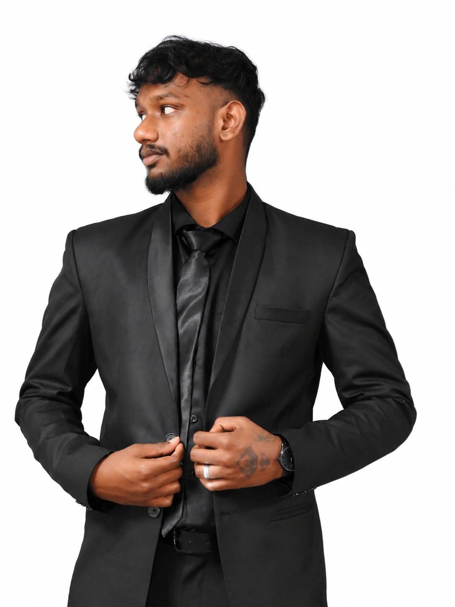
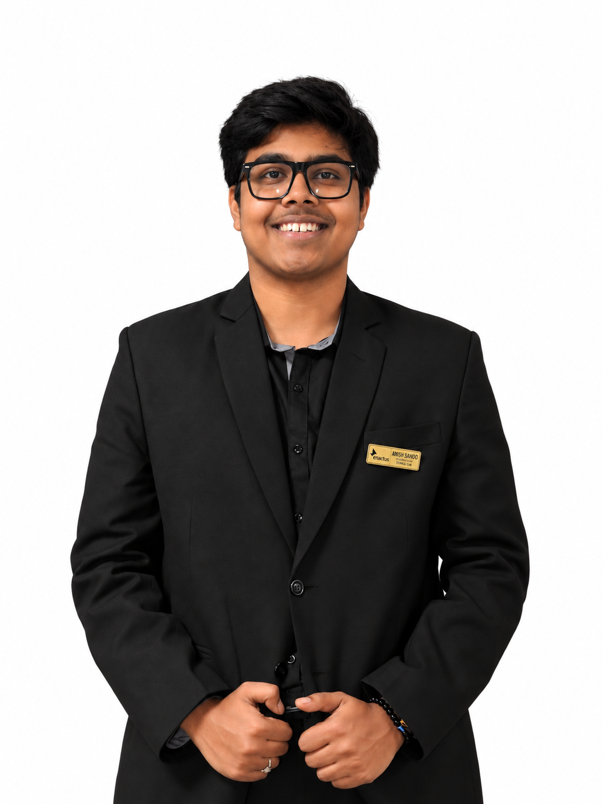
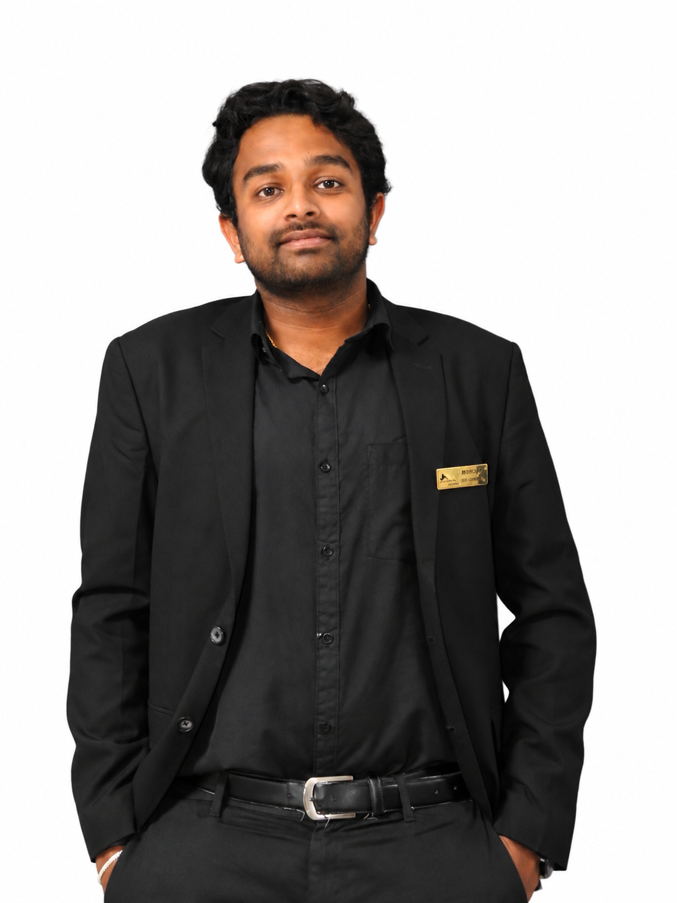
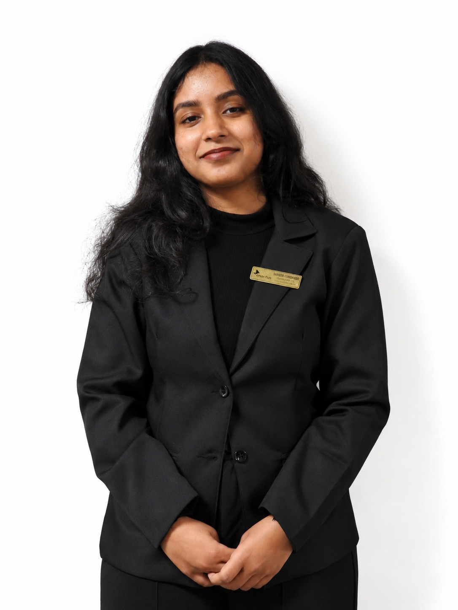

We are a student-led organization driving measurable, purpose-first social enterprises. By transforming innovative ideas into sustainable ventures, we advance the United Nations 17 Sustainable Development Goals.
Enactus is the world's largest experiential learning platform dedicated to creating a better, more sustainable world while developing the next generation of entrepreneurial leaders and social innovators.
In India, since 2003, Enactus has been shaping NextGen leaders in collaboration with primary partner KPMG India, spanning across 95 collegiate institutions with 4,500+ active student leaders.
At Enactus JAIN (Deemed-to-be University), housed under the prestigious School of Commerce, we bring together passionate students, visionary academic mentors, and industry experts to design, test, and scale community-first sustainable business models.
Igniting business innovation, creative thinking, and financial viability to solve community needs.
Stepping beyond classroom theory into ground-level execution, product launches, and grassroots engagement.
A unified collective of students, faculty mentors, alumni, and NGO partners driving shared prosperity.
Our projects directly target United Nations Sustainable Development Goals to ensure measurable environmental and social outcomes.
Engineered by students to substitute harmful single-use plastics, create circular economies, and empower artisan communities.
Creates wholesome, ragi-based brownies naturally sweetened with pure honey. Combining taste, texture, and high nutrition, it provides a guilt-free, healthy alternative to conventional desserts for mindful consumers.
Artisanal healthy chocolates packed with wholesome, nutrient-rich ingredients. Specially crafted to eliminate chemical preservatives and refined additives, making mindful snacking indulgent and nutritious.
Edible and 100% biodegradable cutlery manufactured from natural grains. Formulated in partnership with Manav Charities as a zero-waste alternative to single-use plastic spoons and forks for food businesses.
Durable, reusable canvas event banners developed to replace hazardous single-use PVC flex banners. Delivers premium visual quality for corporate campaigns and institutional events while dramatically cutting landfill waste.
Artistic, long-lasting bookmarks handcrafted entirely from recycled kraft paper. Celebrated during Teachers' Day as tokens of appreciation, combining minimalist aesthetics with environmental responsibility.
Non-toxic, clean-burning soy wax candles engineered as an eco-conscious alternative to petroleum paraffin. Produced in collaboration with Chilume Social Service Society to create sustainable artisan livelihoods.
Nourishing handmade goat milk soaps enriched with pure Vitamin E. Each bar is presented inside a reclaimed coconut shell holder, eliminating disposable synthetic packaging and celebrating traditional craftsmanship.
Fashion-forward, heavy-duty tote bags crafted from upcycled event canvas banners. Each bag gives discarded materials a meaningful second life, transforming waste into durable daily accessories.
Handcrafted, lightweight statement earrings constructed from repurposed textile and fabric offcuts. Champions sustainable fashion choices, artisan creativity, and textile waste reduction.
Biodegradable cloth wipes designed specifically for sneaker and shoe care. Replaces disposable synthetic wipes with a durable, eco-friendly solution that minimizes microplastic pollution.
From national entrepreneurship summits to massive campus sustainability drives, here is how we mobilize impact.
Two-day national summit titled "An Idea is Eternal". Day 1 featured preliminary pitching rounds at Jain University with Chief Guest Prashanth Ramanujam. The Grand Finale was conducted at the prestigious NIMHANS Convention Centre.
Flagship annual exhibition celebrating student enterprise. Launched 11 sustainable student-created products and hosted 17+ sustainable stalls with interactive green games.
A one-week campus-wide conscious donation campaign promoting textile recycling, empathy, and sustainable giving across Jain University students, faculty, and staff.
Hands-on initiative for first-year B.Com and B.M.S students in collaboration with NSS and Antaral Jain ISR, transforming recyclable campus waste into aesthetic classroom decor.
Meet the student leaders guiding Enactus JAIN (Deemed-to-be University) across strategic verticals, innovation, and community outreach.
"Fostering an environment where innovation thrives, leading with empathy and collaboration to create lasting sustainable impact."
"Bringing precision, composure, and dedication to ensure organizational excellence and empowering cross-functional teamwork."

Sec. of Organising"Moving through complex challenges with quiet patience and systematic planning to bring seamless execution to every major initiative."

Sec. of Technicals"Technology isn't just about understanding how systems operate — it's about harnessing knowledge to build solutions that serve humanity."

Sec. of Finance"Managing financial transparency, strategic budgeting, and fiscal discipline to sustainably power our real-world social impact projects."
"Connecting purposeful ideas with grassroots action, coordinating diverse sustainable ventures to ensure measurable community outcomes."
"Public relations is about building trust — one conversation and authentic relationship at a time, amplifying our social impact far and wide."

Sec. of Documentation"Documentation is more than archiving records — it's about capturing milestones, preserving our journey, and turning effort into legacy."
Guided by esteemed academicians and researchers at the School of Commerce, JAIN (Deemed-to-be University).
With over 7 years of academic expertise in Commerce, Accounting, and Taxation, Mr. Vainik blends research in AI and finance with social entrepreneurship. He guided project Femigreen to the Enactus India National Cup and actively mentors projects including Crunchware, Drapi, Totva, and Lumina.
A distinguished academician with over 18 years of teaching experience and two PhDs. Facilitator of Swayam MOOC courses and recipient of the Research Excellence Award, Dr. Swapna mentors Enactus members in building sound business frameworks and impact-driven leadership.
Specialising in Finance, capital markets, and investment behaviour, Swathi Shekar brings textbook principles to life through practical student mentoring. She encourages emerging technologies and AI applications to build viable, market-tested student ventures.
Meaningful social change is co-created with grassroots NGOs, community organizations, and leading corporate sponsors.
Partner for our Threads of Kindness 2.0 initiative. Collaborating on systematic sorting, distribution of clothing to underserved families, and sustainable textile recycling.
Active grassroots partner for Project Crunchware, supporting the manufacturing and adoption of edible natural cutlery to eliminate single-use plastic waste.
Community partner supporting Project Niraa (skincare), Project Lumina (soy candles), and Project Totva (banner totes) to generate sustainable local livelihoods.
Acknowledged at institutional and national summits for research excellence and entrepreneurial execution.
Be part of an experiential learning collective where passionate innovators turn ideas into sustainable enterprises.
Thank you for the incredible interest! The recruitment cycle for the current academic session has completed. Recruitments open annually at the beginning of each academic term for students across all undergraduate & postgraduate programs.
Building web platforms, AI solutions, digital tools, and technical infrastructure for the forum.
Managing strategic budgeting, fund allocations, corporate sponsorships, and fiscal compliance.
Ideating, piloting, and scaling community-driven sustainable products and business models.
Digital storytelling, creative social campaigns, event promotions, and brand communication.
Managing NGO alliances, institutional relations, corporate partners, and media communications.
Comprehensive event archiving, annual reporting, minutes, logistics, and official correspondence.
Want to be notified first when the next recruitment drive opens?
Whether you are an NGO looking to collaborate or an aspiring sponsor, we'd love to connect.